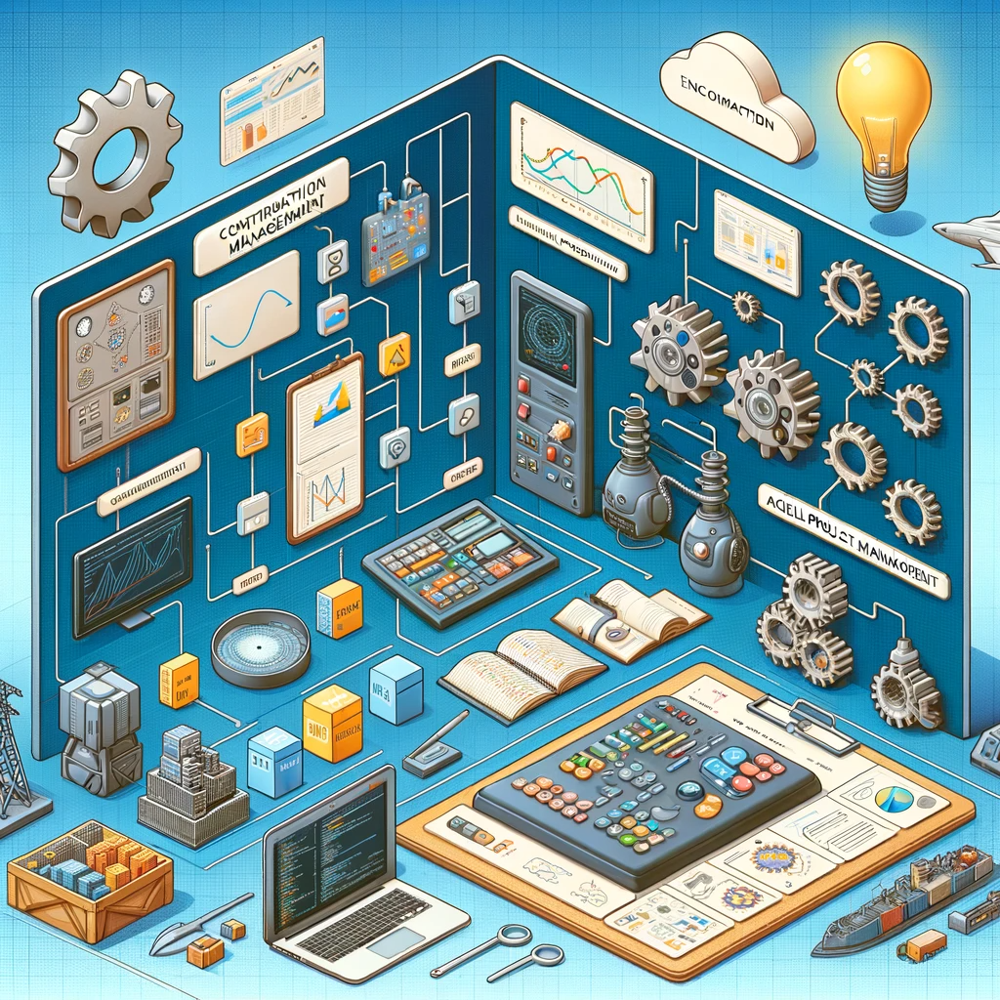

I have learned a lot in this semester’s Software Engineering class. You would think that a SWE class would be focused mostly on coding, but that was not actually the case. I feel that a lot of the valuable information were about parts of Software Development that had nothing to do with writing code, for example:
CM is a process that allows for maintainable systems. As a project grows, there are a lot of changes that take place. It can be confusing to keep track of these changes, especially when working in a team. CM also allows for new team members to look at the process and understand the status of the project. When issues arise, which they most certainly will at some point, CM makes it easy to see what changes have been made in order to find out where the issue began. Before this semester’s Software Engineering class, I had used GitHub to a certain extent. I did not, however, really understand what it was exactly that I was doing. I now find GitHub to be very useful, and use it all the time outside of class. The features I find most useful:
I think CM can be useful in all projects, not just for web development. Any large project is going to have a lot of changes, and it is useful for team members to know what is going on. Even when working individually on any extensive task, I find it helps to write down a log. This is much easier when resuming work than if I were to try to remember everything I did. It also helps with troubleshooting.
Functional programming is a concept that uses functions to do computations. Some key points about functional programming are:
In class, we used the Underscore library with JavaScript. The library includes a variety of utility functions that are designed to achieve common tasks, for example array manipulation. At first, it was difficult to grasp the concept of Funtional Programming, as it is quite different from programming I have done before. I can see the value, however, as the code is readable and reusable. I think it also helps with problem-solving skills, and learning to approach problems in a different light. Functional Programming is a very interesting concept, and I have set the goal for myself of learning more about it outside of class.
Agile Project Management is helpful in team settings, where requirements for the project can contuosly be changing. By breaking down the project into small increments, the work can be easily divided among team members. It also makes it easy for goals and issues to be reevaluated after each part of the project.
Issue Driven Project Management (IDPM) sets issues to be solved, rather than more abstract tasks. In the team project we did in class, we set up a project board in GitHub, and came up with issues for each Milestone. The issues could then be claimed by team members, and it was easy to see what was done, and what remained to be done. Sometimes solving an issue led to a new issue being found, but that was easy to add to the project board. In general I found this approach manageable, and I think out team benefitted from doing the project this way. Other than web development, I could see IDPM as being useful to the planning of any task. Thinking about an entire project can be overwhelming, but starting off by setting goals and issues helps to make everything more manageable.